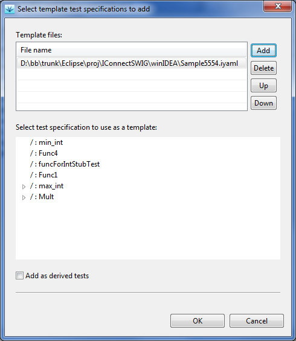

Templates dialog. The same dialog
is also used for adding new test specifications based on templates
to the current project in testIDEA. Select option File
| New Test From Template..., and the following dialog opens:

This dialog can be used to edit list of template files - we can have more of them, if needed. Test specifications from the selected file are shown in the bottom pane. To add a new test specifiation to the current project, select the test specification in the dialog and click OK. If you want it to be added as a derived test specification of the currently selected test specification in testIDEA, check also theAdd as derived test check box.